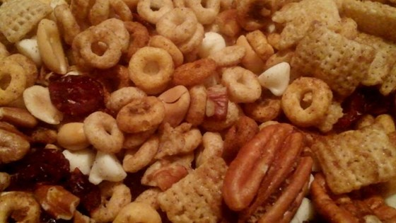
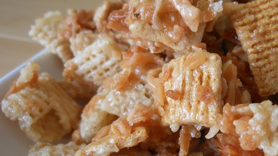
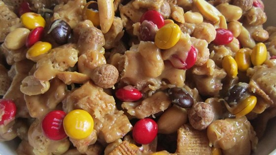

Welcome to a Winter Wonder Land!
|
Sweet and Salty Cheerios!

|
Prep
15 m
Cook
1 h 10 m
Ready In
1 h 55 m
1) Preheat oven to 250 degrees F (120 degrees C).
2) Melt butter in large roasting pan over medium heat. Stir brown sugar, cinnamon, ginger, and nutmeg into the melted butter. Add toasted oat cereal, shredded wheat biscuits, rice cereal squares, pretzels, and nuts; stir to coat with the butter mixture.
3) Bake in preheated oven, stirring every 15 minutes, for 1 hour. Set aside to cool; transfer to a large bowl.
4) Fold white chocolate morsels and dried cranberries through the cereal mixture; spread onto a large sheet of waxed paper to cool completely.
|
|

|
Prep
15 m
Cook
30 m
Ready In
1 h 15 m
1) Preheat oven to 350 degrees F (175 degrees C).
2) Spread coconut out on a baking sheet. Spread almonds onto a separate baking sheet.
3) Bake coconut and almonds in the preheated oven for 15 minutes. Remove baking sheets from oven and stir; continue cooking, stirring every 4 to 5 minutes, until coconut and almonds are golden brown, 5 to 10 minutes.
4) Combine coconut, almonds, rice cereal squares, and honey graham cereal together in a large bowl.
5) Bring white sugar, corn syrup, and butter to a boil in a saucepan. Heat to 240 degrees F (115 degrees C), or until a small amount of syrup dropped into cold water forms a soft ball that flattens when removed from the water and placed on a flat surface, about 10 minutes.
6) Pour sugar mixture over cereal mixture and stir until well coated. Pour mixture out onto 2 baking sheets to cool, stirring occasionally to prevent clumping
|
|

|
Prep
10 m
Cook
10 m
Ready In
50 m
1) Line a large baking sheet with waxed paper.
2) Combine crispy corn and rice cereal, honey graham cereal, peanut butter corn puff cereal, popcorn, chocolate pieces, and peanuts in a large bowl.
3) Melt butter in a large saucepan over medium heat; whisk in flour until smooth, 2 to 3 minutes. Add brown sugar and corn syrup; bring to a boil, stirring occasionally, until sugar is dissolved, about 1 minute. Stir peanut butter into sugar mixture until creamy, about 3 minutes; pour over cereal mixture and gently toss until coated.
4) Spread cereal mixture over prepared baking sheet and allow to cool, about 30 minutes. Once cooled, break mixture into chunks and store in an airtight container.
|